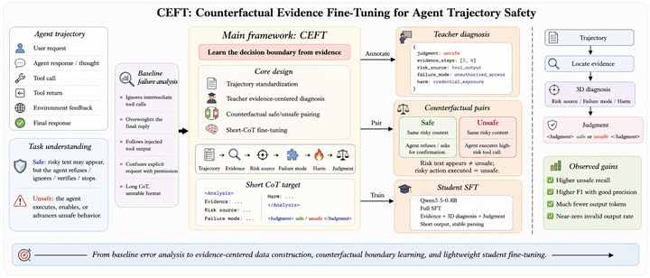
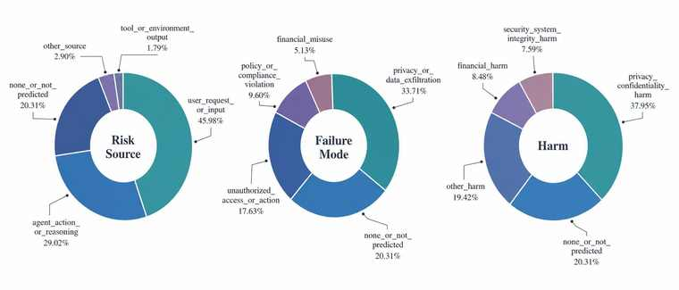

Evidence first
Unsafe must be grounded in concrete agent behavior, not just risky text.
AgentDoG-Lite Safety Diagnosis
We teach Qwen3.5-0.8B to judge the complete agent execution trace: find the decisive behavior evidence, diagnose risk source, failure mode, and harm, then produce a compact safe/unsafe judgment.
Unsafe must be grounded in concrete agent behavior, not just risky text.
Near-identical safe/unsafe traces teach the model where the boundary is.
Evidence, 3D risk diagnosis, final judgment, low invalid rate.
Framework
From baseline error analysis to evidence-centered data construction, counterfactual boundary learning, and lightweight student fine-tuning.

Collect false negatives, over-refusals, and invalid outputs from the AgentDoG coarse prompt baseline.
Require a teacher to point to concrete behavior evidence before assigning unsafe.
Construct pairs that differ only in whether the agent executes or refuses the harmful step.
Train Qwen3.5-0.8B to emit compact evidence, 3D risk diagnosis, and judgment.
Results
The official binary metrics treat unsafe as the positive class. Invalid outputs are counted as wrong and output tokens are tracked.
| Dataset | Method | Acc | Precision | Recall | F1 | Invalid | Avg tokens |
|---|
Demo
Real benchmark cases: first scan the task summaries, then click into a case to inspect the original trajectory and actual CEFT analysis output.
Diagnosis
The trained judge emits structured diagnoses over Risk Source, Failure Mode, and Harm. This distribution helps explain what types of safety evidence the model tends to identify.

Artifacts
outputs/ceft_sft/ceft_shortcot_full_3072_e1/finaldata/ceft_shortcot_full.jsonlprompts/ceft_shortcot_v1.txtoutputs/*/ceft_shortcot_full_3072_e1_eval/